INTRODUCTION A L'ÉTUDE DE LA CHIMIE DES ANCIENS ET DU MOYEN AGE Marcellin Berthelot
SÉNATEUR, MEMBRE DE L'INSTITUT, PROFESSEUR AU COLLEGE DE FRANCE AVEC PLANCHES, FIGURES EN PHOTOGRAVURE D'APRÈS LES MANUSCRITS, TABLES ET INDEX PARIS GEORGES STEINHEIL, ÉDITEUR 2, RUE CASIMIR-DELAVIGNE, S l889
partie I - II - III - IV - V - VI - VII -
revu le 29 novembre 2004Plan : V. Figures d'appareils et autres objets : figures du manuscrit de saint Marc - figures du manuscrit 2327 - figures du manuscrit 2325 - figures des manuscrits de Leide -
V. — FIGURES D'APPAREILS ET AUTRES OBJETSLes manuscrits alchimiques renferment un certain nombre de figures d'appareils et autres objets, destinés à faire comprendre les descriptions du texte. Ces figures offrent un grand intérêt. Quelques-unes ont varié d'ailleurs dans la suite des temps ; sans doute parce que les expérimentateurs qui se servaient de ces traités en ont modifié les figures, suivant leurs pratiques actuelles. Le tout forme, avec les figures de fourneaux et appareils d'une époque plus récente, tels qu'ils sont reproduits dans la Bibliotheca Chemica de Manget, un ensemble très important pour l'histoire de la Chimie. Je me bornerai à étudier les plus vieux de ces appareils ; car ce serait sortir du sujet de la présente publication que d'en discuter la suite et la filiation jusqu'aux temps modernes ; il serait d'ailleurs nécessaire de rechercher les intermédiaires chez les Arabes et les auteurs latins du moyen âge. Les figures symboliques mériteraient à cet égard une attention particulière, par leur corrélation avec certains textes de Zosime, dans son traité sur la vertu, etc. Je citerai, par exemple, de très beaux dessins coloriés, contenus dans le manuscrit latin 7147 de la Bibliothèque nationale de Paris, représentant les métaux et les divers corps, sous l'image d'hommes et de rois, renfermés au sein des fioles où se passent les opérations (fol. 80, 81 et suivants). Dans la Bibl. Chemica de Manget, on voit aussi des figures du même genre (t. I, p. .938, pl. 2, 8, 11, 13, etc; Genève, 1702). Il y a là une tradition mystique, qui remonte très haut et sans doute jusqu'au symbolisme des vieilles divinités planétaires1. Mais ce côté du sujet est moins intéressant pour notre science chimique que la connaissance positive des appareils eux-mêmes. En ce qui touche ceux-ci, je ne veux pas sortir aujourd'hui de l'étude des alchimistes grecs. J'ai relevé tous les dessins qui se trouvent dans le manuscrit de Saint-Marc (XIe siècle), dans le manuscrit 2325 de la Bibliothèque nationale (XIIIe siècle), et dans le manuscrit 2327 (XVe siècle), ainsi que dans les manuscrits 2249, 2250 à 2252, 2275, 2329, enfin dans les deux manuscrits alchimiques grecs de Leide et dans le manuscrit grec principal du Vatican. J'ai fait exécuter des photogravures de ceux de Paris et de celui de Venise, afin d'éviter toute incertitude d'interprétation. Ce sont ces figures qui vont être transcrites ici : on y renverra dans l'occasion, lors de l'impression des textes correspondants.
Figures du manuscrit de Saint-Marc.
Je donnerai d'abord les figures les plus anciennes, celles du manuscrit de Saint-Marc, savoir :
- La Chrysopée de Cléopâtre, formée de plusieurs parties corrélatives les unes des autres, les unes d'ordre pratique et les autres d'ordre mystique ou magiques : c'est la figure 11.
- La figure 12 en est l'imitation grossière (partielle), tirée du manuscrit 2325, et la figure 13, tirée du manuscrit 2327, dérive du même type, avec des variantes considérables et caractéristiques.
- Les figures 14 et 14 bis reproduisent l'alambic à deux récipients (dibicos), déjà dessiné dans les précédentes, mais avec diverses variantes.
- La figure 15 est celle de l'alambic à trois récipients (tribicos).
- La figure 16 représente un appareil distillatoire, sans dôme ou condensateur supérieur, et muni d'un seul récipient.
- La figure 17 est celle du tribicos, d'après le manuscrit 2325.
- La figure 18 a l'apparence d'une chaudière distillatoire.
- La figure 19, à peine ébauchée, semble le chapiteau d'un appareil analogue.
- Les figures 20 et 21 sont des appareils à digestion, en forme de cylindres.
- La figure 22 est un bain-marie à kérotakis (palette pour amollir les métaux).
- La figure 23 en est la reproduction, d'après le manuscrit 2325.
- La figure 24 est un autre bain-marie à kérotakis.
- Les figures 25, 26, 27 reproduisent des variantes et détails des appareils précédents.Le manuscrit de Saint-Marc ne renferme pas seulement des figures d'appareils, mais aussi divers dessins mystiques ou magiques, comme la Chrysopée de Cléopâtre en a déjà fourni l'exemple : je les ai fait également reproduire.
Ce sont :
- Fig. 28 : la formule de l'écrevisse (ou du scorpion), qui semble résumer une transmutation.
- Fig. 29 : deux alphabets magiques ou cryptographîques.
- Fig. 30 : le Labyrinthe de Salomon, d'une écriture plus moderne.
- Fig. 31 : un symbole en forme de cœur renversé, contenant le signe de l'or, du mercure, etc.La plupart de ces figures du manuscrit de Saint-Marc ont été recopiées dans le manuscrit 2249 de la Bibliothèque Nationale de Paris ; dans le Voss, de Leide, dans le principal manuscrit du Vatican et dans divers autres ; quelques-unes ont été imitées d'après les manuscrits 2249 et autres, dans l'histoire de la Chimie de Hœfer et dans les Beiträge de H. Kopp. Il m'a paru intéressant d'en donner les types originaux et complets, tels qu'ils ont été dessinés à la fin du Xe ou au commencement du XIe siècle, sans nul doute d'après une tradition beaucoup plus vieille ; car ils répondent exactement aux descriptions de Zosime, de Synésius et d'Olympiodore l'alchimiste. Je les rassemblerai donc tous ici, bien que certains d'entre eux s'appliquent à des traités qui paraîtront seulement dans les livraisons suivantes : remarque applîquable aussi aux figures tirées des manuscrits 2325 et 2327, dont il va être question. Le manuscrit 2827, en effet, a été écrit en 1478, quatre ou cinq siècles après le manuscrit de Saint-Marc ; les figures des mêmes appareils y reparaissent, mais profondément modifiées ; elles ne répondent plus exactement au texte, mais sans doute à des pratiques postérieures. Le manuscrit 2325 (XIIIe siècle) reproduit au contraire les formes des appareils du manuscrit de Saint-Marc, quoique avec des variantes importantes.
Dans le manuscrit 2327, on trouve, outre la figure 13 déjà présentée, deux grandes figures du serpent Ouroboros, variantes développées de celle de la Chrysopée de Cléopâtre. Il suffira d'en donner une seule : c'est la figure 34.
- La figure 35 reproduit le signe d'Hermès, grossièrement dessiné, d'après le même manuscrit.
- La figure 36 est celle de quatre images géométriques, d'après les manuscrits 2325 et 2327.
- La figure 32 est un dessin mystique, tiré du manuscrit 2327.
- La figure 33, tirée du manuscrit 2325, reproduit le même dessin. Ce dessin singulier semble une variante du symbole cordiforme de la figure 31.Les figures qui suivent représentent des appareils; elles sont tirées des manuscrits 2325 et 2327, mais dessinées d'une façon bien plus grossière que dans le manuscrit de Saint-Marc. Ainsi la figure 37 comprend l'alambic à trois récipients (tribicos de la fig. 17) ; plus un alambic à un seul récipient, et des vases à digestion.
- La figure 38 reproduit quelques variantes delà précédente.
- La figure 39 représente un petit alambic, tiré du manuscrit 2327.
- La figure 40, l'alambic de Synésius, d'après le même manuscrit.
- La figure 41, le même alambic de Synésius, d'après le manuscrit 2325.
- La figure 42 est une simple fiole (2327).
- La figure 43, un alambic avec appendice à 6 pointes (2327).
- La figure 44 est tirée du manuscrit Ru. 6 de Leide : c'est un vase à digestion et à sublimation, correspondant à l'un de ceux des figures 37 et 38.
- La figure 45, tirée de la Biblîotheca Chemica de Manget, est l'aludel décrit dans Geber; instrument qui répond de très près aux figures 38 et 39 et en donne l'interprétation.Enumérons spécialement les figures du manuscrit 2325, figures dont plusieurs viennent d'être transcrites. On y trouve :
- L'alambic de Synésius, qui forme la figure 43.
- Le dessin mystique de la 3e leçon de Stéphanus (fol. 46, verso ; représenté figure 33). On y voit aussi les quatre dessins géométriques (fol. 3) de la figure 36 ; Ainsi que (fol. 83) la formule de l'Écrevisse de la figure 28. Puis vient un alambic à une pointe, avec deux petits appareils à fixation (Opération qui avait pour but de durcir les métaux mous, de solidifier les métaux liquides, de rendre fixes les métaux volatils ; enfin de communiquer aux métaux imparfaits une teinture stable (fixe) d'or ou d'argent.),dessinés dans la figure 12, qui répond à la figure 11 de Saint-Marc. Citons aussi le tribicos, dont nous avons reproduit les variantes (fig 17, 37 et 38) : le tout répond à la figure 13 ; Quant à l'appareil distillatoire de la figure 16, qui se trouve aussi dans le manuscrit 2325, il nous a paru inutile de le reproduire. Nous avons donné, toujours d'après le manuscrit 2325, un appareil à digestion, sphérique et à kérotakis (fig. 23) ; qui répond à la figure 22, tirée de Saint-Marc.Telle est l'énumération des figures différentes qui sont dessinées dans les manuscrits fondamentaux. J'ai cru devoir les reproduire toutes, afin de fournir un fondement solide à la double étude technique et historique des appareils et des opérations décrits dans les textes. Je vais transcrire maintenant ces figures, en accompagnant chacune d'elles de commentaires et de renseignements spéciaux.
Figure 11. — Elle est reproduite en photogravure, d'après le manuscrit de Saint-Marc (fol. 188, verso), avec une réduction d'un cinquième environ. Elle porte le titre de Chrysopée de Cléopâtre, KleopatrhV Crusopoia.
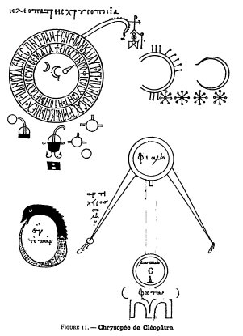
FIGURE XICommentons les diverses portions de cette grande figure2 ;
- 1° Au-dessous du titre se trouve un premier dessin, formé de trois cercles concentriques. Au centre des cercles, les signes de l'or, de l'argent (avec un petit appendice) et du mercure. Dans l'anneau intérieur :
® EiVestin o ojiV o ecwn ton ioV meta duo sunqemata.
« le serpent est un, celui qui a le venin, après les deux emblèmes. »3
Dans l'anneau extérieur :
® En to pan kai di autou to pan kai eiV auto to pan kai ei mh ecoi to pan ouden estin to pan (Cf. OLYMPIODORE, texte grec, p. 84, lig. 13).
« Un est le tout et par lui le tout et vers lui le tout; et si le tout ne contient pas le tout, le tout n'est rien. »4
A droite, le cercle extérieur se prolonge par une sorte de queue, qui montre que ce système est la figuration du serpent mystique.
- 2° Puis viennent divers appendices et signes d'apparence magique, situés à droite, dont la signification est inconnue. Cependant je serais porté à rapprocher le double cercle incomplet, muni de huit appendices supérieurs, du signe de l'Ecrevisse à huit pattes antérieures, dessiné figure 28 ; lequel est traduit par les mots : molybdochalque (alliage de plomb et de cuivre) brûlé, et argyrochalque (alliage de cuivre et d'argent) brûlé. Ces signes seraient alors les symboles chimiques d'une opération de transmutation du plomb en argent, de même que ceux de la figure 28. Au-dessous des grands cercles sont des signes répondant à des opérations chimiques, exécutées dans certains appareils que je vais énumérer.
- 3° Tel est le petit dessin central, représentant un appareil pour fixer les métaux. Il est posé sur un bain-marié, muni de deux pieds recourbés et placé lui-même au-dessus d'un fourneau. Cet appareil est pourvu d'un tube central qui le surmonte, tube destiné sans doute au départ des gaz ou des vapeurs. Ce dessin est reproduit d'une façon plus précise, avec le mot phxiV, sur le folio 220 du manuscrit 2327 (v. fig. 13, à droite).
- 4° Le petit dessin, situé à gauche du précédent, représente un appareil analogue, avec un ballon supérieur, destiné à recevoir les vapeurs dégagées par la pointe du tube. Le tout-répond à l'alambic de gauche de la figure 13.
- 5° Les deux petits cercles, situés à droite et munis de trois appendices rectîlignes, semblent représenter des appareils avec leurs trépieds posés sur le feu; tels que celui de gauche des figures 13 et 38. On pourrait en rapprocher aussi le symbole du botarion (fig. 5, 1. 4 et 6 g. 7, 1. 27), représentant un vase à digestion sur son fourneau, analogue au dessin situé à gauche et en bas de la figure 37 et au dessin situé à droite de la fig. 38.
- 6° Le cercle inférieur, muni d'un point central, symbolise l'œuf philosophique (?), ou le cinabre (Voir fig. 4, Pl. II lig. 13, et la note de la page 122).
- 7° Vers le bas à gauche, est figuré le serpent Ouroboros, avec l'axiome central : En to pan ; le tout est un.
- 8° Sur le côté droit du serpent, un grand alambic à deux pointes (dibicos), posé sur son fourneau, lequel porte le mot : jwta, feux. Le récipient inférieur, ou chaudière, s'appelle lwpaV, matras. Le récipient supérieur, dôme ou chapiteau, est la jialh, mot qui signifiait autrefois tasse ou coupe, mais qui a ici le sens plus moderne de fiole ou ballon renversé. Voici l'usage de cet alambic. La vapeur monte du matras, par un large tube, dans l'ouverture plus étroite du chapiteau ou ballon renversé ; elle s'y condense et s'échappe goutte à goutte, par deux tubes coniques et inclinés. A côté du tube gauche, se trouvent les mots anticeiroV solhn (sic) : tube du pouce, ou plutôt contre-tube ; attendu que le rôle de ce tube descendant est inverse du rôle du tube ascendant, qui joint le matras au chapiteau.La figure de la Chrysopée de Cléopâtre existe, sous le même titre et avec ses diverses portions essentielles, dans les manuscrits copiés directement sur celui de Saint-Marc ; elle en caractérise la filiation.
Dans les manuscrits 2325, 2327 et dans leurs dérivés, le titre a disparu; mais la figure subsiste encore, moins belle et moins nette, avec les axiomes mystiques qui la caractérisent. Les annexes : alambic à une ou deux pointes, vases à fixation et trépied, y ont été aussi modifiés dans leur forme. Cependant le tout existe à la même place du texte, c'est-à-dire en tête des ouvrages de Zosime sur les instruments (2327, fol. 220 ; 2325, fol. 82).
Figure 12.— Je donne ici le décalque des appareils représentés dans le manuscrit 2325 (fin du XIIIe siècle) : ces dessins sont bien plus grossiers. Je n'ai pas cru utile de reproduire la figure même des trois cercles concentriques, qui sont à peu près pareils à ceux de la figure 11 ; mais je vais en indiquer les inscriptions, à cause des variantes. L'anneau extérieur porte la même inscription, à demi-effacée et avec des suppressions :
® en to pan di ou to pan (kai di autou to) pan kai en autw to pan
Dans l'anneau intérieur, on lit :
® eiV estin o ojiV o ecwn ta duo suvqemata kai ton ion
Au centre, de droite à gauche, on voit les signes de l'or, de l'argent, du mercure, du plomb. Au-dessus, le cinabre (ou l'œuf philosophique), qui se trouvait en dehors des cercles dans la figure du manuscrit de St-Marc (6°). Venons maintenant à la portion du dessin du manuscrit 2325 que j'ai reproduite dans la figure 12 :
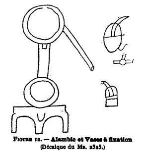
FIGURE XIIA gauche des cercles, on voit l'image grossière d'un alambic à une pointe, avec condensateur supérieur et matras inférieur, le tout de la même forme générale que la portion 8° de la figure du manuscrit de St-Marc. A côté, deux appareils à fixation, pointe tournée vers le haut, lesquels sont évidemment imités des portions 3° et 4° de la fig. 11. Il en est de même d'un dernier reste du petit cercle à 3 appendices ou trépied, coupé dans le manuscrit 2325 par le relieur, mais qui se retrouve intact dans le manuscrit 2275, lequel a toute cette figure. En effet, le manuscrit 2275 (daté de 1465) reproduit les cercles concentriques, l'alambic à une pointe, les deux vases, et le petit trépied, pris avec des formes qui semblent fidèlement copiées sur le 2325, lequel est d'ailleurs beaucoup plus ancien.
Figure 13. — Elle reproduit les dessins analogues du manuscrit 2327, fol. 220 (XVe siècle). Les inscriptions des cercles concentriques sont identiques à celles du manuscrit 2325, sauf l'absence des symboles centraux. Par contre, au folio 80 du 2327, au début d'une autre copie du même ouvrage de Zosime, les cercles concentriques ont été supprimés, probablement faute de place, par le copiste; mais il a transcrit à l'encre rouge les axiomes mystiques, suivis des signes du plomb, de l'argent, du mercure et de l'or, surmontés par celui du cinabre (ou de l'œuf), exactement comme dans le manuscrit 2325. Au verso du fol. 80 (2327,) existent les dessins de l'alambic à une pointe, avec condensateur supérieur, jialh, et matras, lwpaV, conformes à la figure 11 et à la figure 13 mais mutilés par le relieur. Sur la même page, on voit encore un appareil à fixation métallique, semblable à celui de la figure 13. Il y a des inscriptions sur les divers appareils du folio 80, telles que phxiV
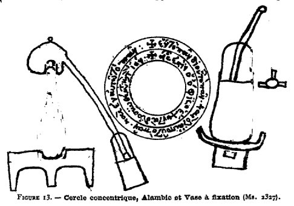
FIGURE XIIIsur l'appareil à fixation; (kam) hvion, sur son fourneau et sur celui de l'alambic; lwpaV, sur le matras de ce dernier; (ji) alh, deux fois répétés, sur son chapiteau. La forme même des appareils dans les manuscrits 2325 et 2327 offre des variantes intéressantes pour l'histoire de la Science et sur lesquelles je reviendrai bientôt mais ici Je veux seulement montrer la filiation des figures. En tout cas, la copie 2325 répond à une tradition postérieure à celle du prototype de Saint-Marc, puisque le nom de la Chrysopée de Cléopâtre a disparu. On remarque que presque toutes les portions de la Chrysopée de Cléopâtre : cercles mystiques, serpent Ouroboros, alambics, appareils à fixation, trépieds, cinabre, se retrouvent, parfois.même agrandis, dans les figures des manuscrits postérieurs. Une seule partie manque, ce sont les signes magiques. Peut-être doit-on en voir la transformation dans la formule de l'Ecrevîsse, qui se trouve à la fin du même traité de Zosime et qui présente avec les signes magiques certaines analogies singulières. J^y reviendrai tout à l'heure. En tout cas, la Chrysopée peut être regardée comme le prototype, sans doute fort ancien, des dessins des appareils alchimiques. C'était un type antérieur à Zosime, dessiné sans doute dans les ouvrages perdus de Cléopâtre, cette femme savante (Origines de l'Alchimie, p. 173), à laquelle nous devons aussi un traité des poids et mesures gréco-égyptiens venu jusqu'à nous. Ces ouvrages auraient été ensuite fondus dans ceux de ses continuateurs, tels que Zosime. Peut-être même la Chrysopée avait-elle constitué, à une époque plus ancienne encore, un tableau symbolique, complet en soi, et que l'on développait par des explications purement orales ; à peu près comme une page d'aujourd'hui remplie par les symboles des réactions chimiques et des appareils correspondants. Si cette conjecture est fondée, nous aurions ici la trace de divers états successifs de la science.
Figures 14 et 14 bis. — Ce sont celles d'un alambic à deux pointes. Elles sont tirées du manuscrit de Saint-Marc, folio 193, verso. La forme générale est pareille à celle du même instrument dans la figure 11, sauf les variantes suivantes. Le tube qui joint le matras ou chapiteau est élargi en entonnoir à la partie supérieure ; l'ajustement même des deux tubes coniques, par rapport à cet entonnoir, n'est pas clairement indiqué. Sous la pointe de chacun d'eux se trouve un petit ballon, pour recevoir les liquides distillés. Le matras inférieur s'appelle toujours lwpaV, avec addition des mots qeiou apurou, matras du soufre apyre. Ces deux mots manquent dans la figure 11 ;
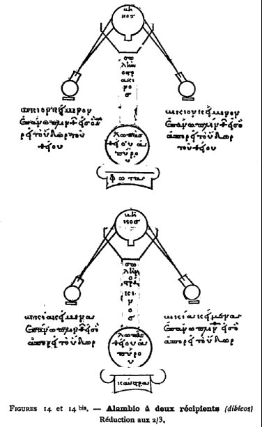
FIGURE XIV et XIV bisà moins qu'ils n'y soient représentés par deux signes inconnus, situés au-dessous de lwpaV. En tout cas, ils concordent avec la description du texte, dans lequel il est dit que l'on mettait du soufre dans le matras. Le tube ascendant porte les mots swlhn ostrakinoV : tube de terre cuite. Le chapiteau ne s'appelle pas jialh, mais bhkoV, pour bikoV : amphore. Les deux petits ballons destinés à recevoir les liquides distillés s'appellent également bikion et tous deux portent la légende :
ŒŒŒ® keimenon epanw plinqou eiV o aporrei to udwr tou qeiou
: c'est-à-dire
« ballon placé au-dessus de la tablette rectangulaire, dans lequel s'écoule l'eau du soufre ».
Ceci, joint à l'inscription de la lwpaV, montre que cet alambic est destiné à la préparation de l' « eau de soufre ».5
Cette figure est répétée deux fois dans le manuscrit de Saint-Marc, sauf que les mots bikion keimenon sont remplacés par le pluriel bikia keimena, et le mot jwta par le mot kaustra : fourneau à combustion ; les mots tou qeiou manquent la seconde fois.
Figure 15 (manuscrit de Saint-Marc, fol. 194, verso). — Cette figure est
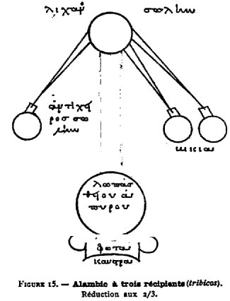
FIGURE XVun alambic à trois récipients (bikia), ou tribicos. Le fourneau porte ici les deux mots superposés : kaustra (lieu de la combustion) et jwta (lieu de la flamme). Le matras s'appelle de même : lwpaV qeiou apurou. Enfin on distingue le tube ascendant, ou tube index, licanoV swlhn, c'est-à-dire tube direct du tube, descendantou tube du pouce, anticeiroV swlhn, c'est-à-dire tube inverse (par sa direction). Cette figure se retrouve dans les manuscrits 2325 et 2327; dans le dernier avec modifications considérables : Je les signalerai tout à l'heure.
Figure 16. — Cette figure (manuscrit de Saint-Marc, fol. 194 verso, au-dessous de la précédente), est un alambic à col de cuivre, calkion, avec un seul
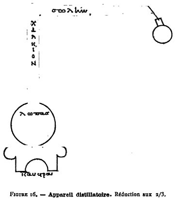
FIGURE XVItube, swlhn, gros et fort, coudé à angle droit à sa partie supérieure et conduisant la vapeur, de la lwpaV au petit ballon.
Figure 17. — Les deux figures précédentes sont reproduites dans la même forme générale par le manuscrit 2325 (fol. 84), sauf quelques variantes; je donne seulement le tribicos. Il existe aussi dans le manuscrit 2275 (fol. 57 verso). Les mêmes figures sont dessinées dans le manuscrit 2327;
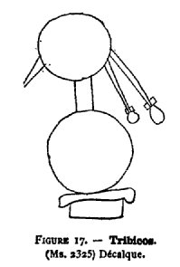
FIGURE XVIImais la forme en a été profondément modifiée et s'est rapprochée de celle des alambics de verre du siècle dernier, que l'on emploie encore quelquefois aujourd'hui. Je transcrirai ces reproductions un peu plus loin (fig. 37 et 38).
Figure 18. — Elle se trouve au folio 10 du manuscrit de Saint-Marc, entre la première et la deuxième leçon de Stephanus ; elle est dessinée à l'encre
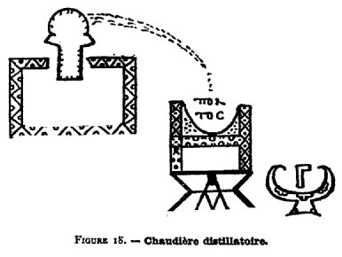
FIGURE XVIIIrouge et contemporaine du texte. La signification en est difficile à préciser avec certitude. Cependant îl semble qu'il s'agisse d'une chaudière à tête élargie en forme de chapiteau, et destinée à distiller des liquides qui tombent dans un bassin hémisphérique appelé pontoV : la mer. Ce bassin est porté sur une sorte de fourneau, bain de sable, ou bain-marie. A côté se trouve un instrument inconnu ; à moins qu'il ne s'agisse d'une forme un peu différente de bain de sable. Le texte même de Stephanus, soit à la fin de la première leçon, laquelle est purement déclamatoire et enthousiaste, soit au début de la deuxième leçon, lequel est relatif aux propriétés mystiques de l'Unité numérique; ce texte, dis-je, ne m'a paru fournir aucune lumière pour l'intelligence de cette figure.
Figure 19. — Cette figure (manuscrit de Saint-Marc, fol. 106 verso), est
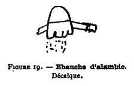
FIGURE XIXune ébauche à l'encre rouge, d'une écriture plus moderne; elle est en marge d'un article sur l'œuf philosophique, à côté des mots : to de (ici un mot gratté, (wou ?) touto wmon legousiV. Il semble que ce soit le chapiteau d'un alambic. On donne cette figure pour ne rien omettre. Les alambics etappareils dîstillatoires, que nous venons d'étudier, se rattachent à la tradition de la Chrysopée de Cléopâtre, laquelle en contient les plus vieilles figures. Mais il est un autre ordre d'appareils, destinés ceux-ci au traitement des métaux par le mercure, le soufre, les sulfures d'arsenic ; appareils qui avaient été décrits spécialement par une autre femme, Marie l'Alchimiste, de préférence aux appareils distillatoires (manuscrit de Saint-Marc, fol. 186, avant-dernière ligne). Ce sont les appareils à kérotakîs, c'est-à-dire à palette, avec leurs fourneaux. Ces appareils n'existent pas dans la Chrysopée et semblent plus modernes ; ils ont joué un rôle fort important dans le développement historique des pratiques alchimiques. Le passage rappelé plus haut montre que le traité de Zosime sur les instruments et fourneaux, dont nous possédons des débris, embrassait, ainsi qu'il arrive d'ordinaire dans les matières techniques, les traités antérieurs sur la même question, tels que ceux de Cléopâtre sur les alambics (v. p. 137) et ceux de Marie sur les appareils à kérotakis et leurs fourneaux.
Voicî les figures de ces derniers :
Figures 20 et 21.—Ces figures (manuscrit de Saint-Marc, folio 196 verso), représentent des vases à digestion cylindrique, en terre cuite (aggoV ostrakinon, vase de terre), placés sur le feu (jwta).
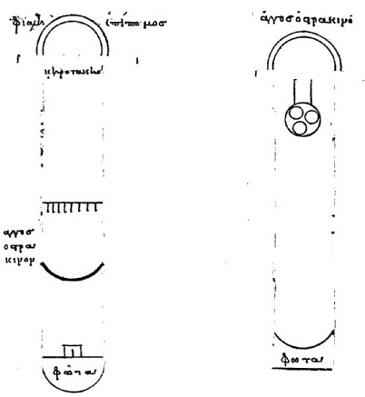
FIGURES XX et XXIAu-dessus du vase était posée une lameou feuille métallique, khrotakiV, sur laquelle on faisait fondre les matières fusibles. La forme en était tantôt en parallélogramme et aplatie (fig. 22), avec les extrémités arrondies ; tantôt triangulaire (fig. 24 bis). La khrotakiV paraît n'être autre que la palette des peintres anciens (Du Cange. Glossarium médiae et infimae graecitatis.), qui y faisaient le mélange des couleurs, entr'elles et avec la cire ; ils maintenaient la palette à une douce chaleur, afin d'opérer le mélange, et aussi au moment de s'en servir. J'ai déjà insisté sur les analogies que l'on établissait alors (Origines de l'Alchimie, p. 242 à 246) entre la teinture des métaux et celle des étoffes. Les quatre couleurs des peintres grecs, d'après Pline (H. N.XXXV, 31), étaient le blanc, le noir, le jaune, le rouge. Ce sont précisément les quatre couleurs des premiers alchimistes, de Zosime par exemple (Même ouvrage, p 35, 182, 242). Ils cherchaient à en imprégner les métaux, en ramollissant ceux-ci. Le mot ceratîo (egkhrwsiV), employé par les traducteurs latins de Geber et qui a eu cours pendant tout le moyen âge, exprime cette dernière opération, imitée à la fois des pratiques des peintres anciens et de la fabrication de certains médicaments (cérats). Elle s'effectuait à l'aide du mercure, du soufre et de l'arsenic (sulfuré), par une digestion lente et une chaleur modérée (Bibliotheca chemica de Manget, t. I, p. 540, dans le traité de Geber.)6. Aux débuts, on opérait sur la palette des peintres (kérotakis) ; mais il fallut bientôt la pourvoir de deux appareils accessoires : l'un destiné à réchauffer les mixtures (bains-marie, bains de sable, de cendre ou analogues) ; l'autre, à condenser les vapeurs que l'on voulait retenir. C'était d'abord une coupe ou tasse (jialh) renversée, servant de couvercle (epipwmoV), et dont la forme, modifiée graduellement est devenue le ballon ou fiole actuelle : le mot grec lui-même a pris peu à peu ce sens nouveau, dans les textes alchimiques. D'après certaines descriptions, il semble que la lame métallique n'ait pas seulement servi de support aux produits que l'on faisait réagir entre eux et sur les vapeurs sublimées d'en bas; mais cette lame éprouvait dans sa propre matière, la transformation produite par les fondants et par les vapeurs. Pendant l'emploi d'un appareil disposé comme il vient d'être dit, une nouvelle circonstance se présenta nécessairement. La kérotakîs n'obturait pas l'orifice du récipient inférieur. Elle avait même parfois une forme triangulaire, à en juger d'après le dessin reproduit par la figure 24 bis. Dans ces conditions, les matières fusibles déposées sur la kérotakis coulaient à côté et tombaient au-dessous : on fut amené ainsi à placer un récipient (aggoV ostrakinon), pour les recevoir et les empêcher d'arriver jusqu'au foyer. Il semble même que l'on ait cherché à ce moment à opérer une certaine séparation entre les matières solides, telles que métaux non ramollis, fragments divers, etc., et les matières liquéfiées; on y parvenait, soit à l'aide d'un ballon percé de trous (fig. 21), soit à l'aide d'un crible (fig. 20). Les produits liquéfiés qui tombaient ainsi au fond se rapprochaient sans cesse du foyer (jwta). La même chose pouvait arriver au mercure liquide, condensé à la partie supérieure et retombant ensuite par son poids, voire même au soufre et aux sulfures d'arsenic fondus et coulant sur les parois, si la chaleur était suffisante. Mais ces dernières substances, aussi bien que les corps qui déterminaient la liquéfaction des métaux (mercure, soufre, sulfures d'arsenic et autres), en atteignant le fond, éprouvaient un nouveau changement. En effet, les matières sublimables contenues parmi ces corps et substances, lorsqu'elles arrivaient vers le fond de l'appareil, se trouvaient portées à une température élevée ; elles se vaporisaient alors et remontaient
vers les parties supérieures. Le caractèrerétrograde de cette opération, qui permettait aux vapeurs d'attaquer de nouveau le métal ou la substance placée sur la kérotakis, paraît avoir frappé les opérateurs : de là sans doute le nom de karkinoV (écrevisse), c'est-à-dire appareil fonctionnant en sens rétrograde, donné à certains de ces appareils. De là aussi, ce semble, le signe de l'Écrevisse dans la formule de la figure 27, signe surmonté des mots : alliage de plomb et de cuivre brûlé; alliage d'argent et de cuivre brûlé. L'emploi de ces sublimations réitérées, pour blanchir le cuivre et pour amollir les métaux, c'est-à-dire per rem cerandam, est indiqué par les alchimistes du moyen-âge. Supprimons la kérotakis dans de semblables appareils et nous aurons l'aludel, instrument de digestion et de sublimation décrit dans les œuvres de Geber et figuré dans la Bibliotheca Chemica de Manget (t. I, planche répondant à la page 540). Les figures qui se trouvent dans ce dernier ouvrage tome I, au bas de la planche 5, p. 938, en haut de la planche 6 à gauche, ainsi qu'au milieu de la planche 14, paraissent avoir une destination analogue. Je citerai encore les dessins qui se trouvent aux folios 179 verso, 180,181, du vieux et beau manuscrit latin 7156, sur parchemin, de la Bibliothèque nationale de Paris. Dans le manuscrit latin de la même Bibliothèque 7162, folio 64, on voit la figure d'un bain de sable (arena). Dans le manuscrit latin 7x61 (fol. 58 et fol. 113 verso) existe la figure d'un appareil à digestion, sur son fourneau. Tous ces appareils correspondent à la suite d'une même tradition technique. Observons ici que les appareils cylindriques pourvus de la kérotakîs n'ont été employés que par les plus anciens alchimistes. Ils sont figurés seulement dans le manuscrit de Saint-Marc et dans les copies qui en dérivent ; mais ils n'existent ni dans le manuscrit 2325, ni dans le manuscrit 2275, ni dans le manuscrit 2327.Figure 22. — Cette figure (manuscrit de Saint-Marc, fol. 195 verso) est
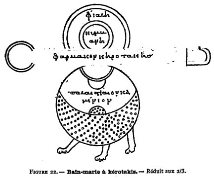
FIGURE XXIIaussi un appareil à digestion, appareil sphérique et porté sur trois pieds. Au-dessous de la kérotakis et des vases à condensation supérieurs, il y existe un digesteur, distinct du foyer, et intermédiaire ; le tout fut désigné sous le nom de fourneau de Marie l'alchimiste (Origines de l'alchimie, p. 171), prototype de notre bain-marie. Le digesteur dessiné sur cette même figure 22 est long d'une palme, comme l'indiquent les mots palaistiaion kaminion. Il semble criblé de trous ; à moins qu'il ne s'agisse d'une ornementation superficielle. C'était là d'abord un bain de cendres, ou un bain de sable. Dans l'une des formules de dorure du Papyrus X de Leide, il est question aussi de l'emploi des cendres (formule 57, ce volume, p. 40). La palette des préparations, jarmakon khrotakhV (sic), offre ici de grandes dimensions. Elle est chauffée seulement au milieu. Deux coupes inférieures, placées immédiatement sous la kérotakis, l'une grande et surmontant une coupe plus petite, reçoivent les matières fusibles. Les produits sublimés sont récoltés dans deux condensateurs supérieurs, concentriques et successifs. L'un est appelé jialh (coupe) ; l'autre kumbanh (tasse).
Figure 23. — Cette figure, imitation de la précédente avec de légères
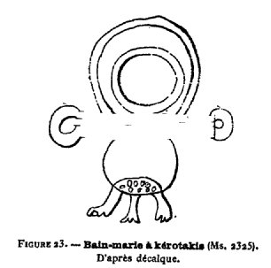
FIGURE XXIIIvariantes, est reproduite d'après le manuscrit 2325, folio 84 recto. Elle existe aussi dans le manuscrit 2275, folio 57 verso.
Figure 24. — Cette figure (manuscrit de Saint-Marc, fol. 196), est encore un appareil analogue aux précédents, sauf quelques variantes plus importantes. La palette porte deux coupes inférieures vers ses extrémités. Dans la coupe supérieure (jialh), on lit le mot baqoV (cavité).
Figure 24 bis. — Au-dessous, se trouve la kérotakîs, ou palette triangulaire.
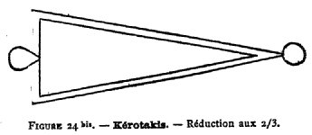
FIGURE XXIV bisC'est une seconde forme de cet instrument, distincte de celles qui sont représentées figures 22 et 25.
Figure 25. — Cette figure (manuscrit de Saint-Marc, fol. 112 en marge) représente une disposition différente de l'appareil à digestion sphérique. Ce dessin et les deux suivants se trouvent à la fin de l'article Tou crioostianou peri eustaqeiaV tou crusou, en marge ; ils sont d'une écriture postérieure au texte courant et presque effacée. Ils paraissent répondre à une description d'appareils, qui forme le dernier paragraphe de cet article. A côté de la figure 25 se trouve le mot kaminoV ; au-dessous on lit, en caractères du XVIe siècle, une inscription devenue presque illisible, mais dont les lettres restées distinctes répondent sans nulle incertitude au texte
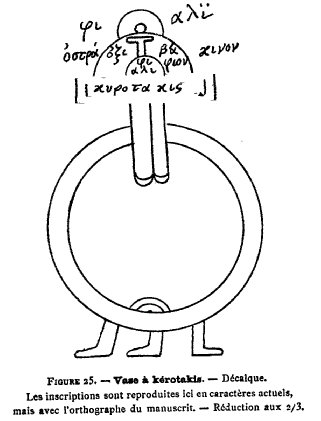
FIGURE XXVsuivant : karkinoV d¢epi leukwsewV keitai d¢o logoV emprosqeV ; c'est-à-dire
« écrevisse pour le blanchiment ; l'explication se trouve au-dessus du texte précédent » (Voir plus loin la formule de l'Ecrevisse - sur le sens de ce mot appliqué à un appareil chimique, voir p. 145).
Ce texte précis est tiré du manuscrit 1174 du Vatican, où il accompagne deux dessins à peu près identiques aux figures 25 et 27 ; sa comparaison avec les lettres non effacées du manuscrit de Saint-Marc ne laisse aucun doute sur le sens des mots formés par ces dernières. Le même appareil est grossièrement dessiné dans le manuscrit 2275. folio 57 verso, avec une inscription similaire. Il existe également dans le manuscrit 2325 (fol. 84), avec la même inscription, laquelle se reconnaît encore, quoique effacée aux trois quarts. Enfin il existe dans un manuscrit grec de Leide. (Voss. in-4°, n° 47, fol. 55 verso). Le texte que Je viens de transcrire semble indiquer un appareil destiné à une opération rétrograde, c'est-à-dîre telle que les produits tombés au fond par fusion remontent par volatilisation à la partie supérieure. II est probable qu'il s'agit de la sublimation du mercure, ou de l'arsenic, destinés à blanchir le cuivre, en s'alliant à lui (p. 145). La légende intérieure de la figure 25 est plus lisible que l'inscription placée à côté ; l'écriture semble également répondre au XVIe siècle, avec un iotacisme poussé à l'extrême : jiali remplaçant jialh, kurotakiV remplaçant khrotakiV, etc.
Remarquons que ce dessin ressemble aux figures 22, 23 et 24, sauf quelques variantes plus compliquées. Le système repose de même sur un vase à digestion. L'une des coupes supérieures est en terre : (aggoV) ostrakinon ; c'est une grande coupe, désignée à l'intérieur sous le nom de oxbajion (saucière).Figure 26. — Les deux condensateurs supérieurs des figures 25 et 27
sont dessinés à côté séparément, avec le mot lwpaV pour le plus grand, et un nom abrégé pour le plus petit, situé au-dessous. Ce mot semble être iqm abréviation avec iotacisme, remplaçant hqmoV, couvercle percé de trous7.
Figure 27. — Dans ce dessin il n'y a pas de vase à digestion et l'action du foyer s'exerce directement. Le mot kurotakiV est inscrit sur la portion verticale du dessin, au-dessus du feu ; mais il est probable que c'est faute de place pour l'inscrire sur la partie horizontale et supérieure. Cet appareil doit être rapproché des figures 20 et 21, c'est-à-dire des aludels, plutôt que des bains-marie des figures 22, 23, 24 et 25.
Les appareils 25, 26 et 27 n'existaient pas sur le manuscrit initial de Saint-Marc ; ils ont été ajoutés plus tard, vers le XVIe siècle, sans doute, d'après un autre manuscrit comparable au 2325 (XIIIe siècle), mais qui n'existe plus. Les dessins multipliés de ces appareils à khrotakiV, dans les divers manuscrits, montrent que ces appareils ont été d'un usage étendu et prolongé. Ils représentent les premiers essais de bains-marie, bains de sable, et surtout bains de cendre, employés même aujourd'hui dans nos laboratoires pour les digestions. Mais c'étaient à l'origine des appareils beaucoup plus compliqués et où s'opéraient à la fois certaines séparations de substances, par fusion et sublimation, et certaines réactions lentes des produits fondus ou sublimés, entre eux, ou sur d'autres matières placées dans les appareils. — Il est probable qu'il serait possible de retrouver d'autres traces de ces appareils dans les pharmacopées du moyen âge; peut-être même existent-ils encore quelque part en Orient. Cependant il est digne de remarque qu'ils ont disparu dans le manuscrit 2327, pour faire place à des digesteurs d'une toute autre forme, sans doute inventés postérieurement, et que nous examinerons tout à l'heure.
Nous avons donné toutes les figures relatives aux appareils du manuscrit de Saint-Marc ; joignons-en quelques autres, d'un caractère différent.
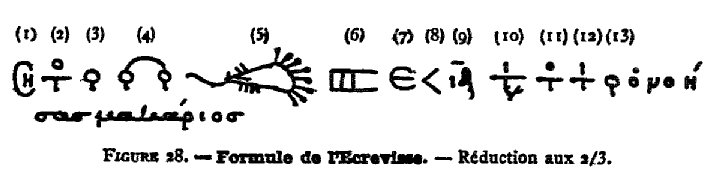
FIGURE XXVIII— II s'agit d'abord de la formule de l'Ecrevisse, ou du Scorpion, formule mystérieuse, qui était réputée contenir le secret de la transmutation. Elle se trouve (Voir aussi manuscrits 2249, folio 100 — 2325, folio 83 — 2327, folio 80 et répétition au verso; folio 220 verso.— Leide, Voss., n»47, fol. 70. ) à la fin des Mémoires de Zosime (manuscrit de Saint-Marc, fol. 193). Son interprétation est donnée, en même temps que sa répétition, sur la première page de garde du manuscrit de Saint-Marc, dans un texte d'une autre écriture, plus moderne (XIVe siècle) que le reste. Le tout se trouve aussi dans le manuscrit de Leide, Voss., in-4°, n° 47, fol. 70. La première page de Saint-Marc débute par la description du traitement des scories, lequel paraît se rapporter au changement d'une scorie noire et métallique, telle que celle du plomb, en un composé blanc (carbonate ou sulfate), sous l'influence prolongée de l'eau et de l'air. La description, écrite dans un grec barbare, se termine par ces mots :
« Ainsi a été accomplie avec le secours de Dieu, la pratique de Justinien. » (Texte grec, II, iv bis, appendice I).
Puis viennent le nom de la tutie, ou oxyde de zinc impur, suivi par des mots magiques, analogues à ceux qui figurent dans les Papyrus de Leide, dans Jamblique et dans le manuscrit 2419. Les voici :
Toutia. marazh. asenkhr. azh. napratei. mhrhcantht. cantht. moucanar. pouman. naimaric. tecmhrizocra. rosouc. tarht. chlsi. tzialphsin. para. kolpacsri.
Il semble que ce soient là des formules que l'on récitait au moment du traitement de la tutie, minerai de zinc (mêlé de plomb et de cuivre) employé dans l'opération de la diplosis, c'est-à-dire de la transmutation. En effet, à la suite, se trouve la formule de l'Ecrevisse, surmontée de mots qui en interprètent chacun des signes (J'ai déjà donné cette interprétation : Origines de l'Alchimie, p. 348 - Mais la lecture actuelle est plus correcte). J'ai numéroté les signes dans la figure, pour donner plus de clarté aux explications.
- Le premier signe (n° 1) se traduit (fig. 8, PI. VI, 1. 24) par shmeion ou shmeiwsai = notez : c'est un signe employé fréquemment à la marge des manuscrits, pour désigner un passage important. Au-dessus, ce signe est ici répété, avec le mot pai; c'est-à-dire : Attention ! initié.
- Le second signe (n° 2) est traduit au-dessus par to pan ; ce qui veut dire la composition ou le mélange complet8. Ce mot signifie aussi le molybdochalque (plomb et cuivre, sans doute associés au zinc), d'après un passage de Zosime. Cet alliage métallique résultait en effet de la réduction de la cadmie ou de la tutie impure, substance dérivée du grillage de certains sulfures métalliques et qui semble avoir été désignée parfois, en extension d'une dénomination appliquée à ces sulfures, eux-mêmes, par le nom de magnésie. On peut le conclure avec probabilité, d'après un passage de Geber sur les esprits ou matières volatiles, et d'après quelques textes des alchimistes grecs.
- Le troisième signe (n° 3) est celui du cuivre. Il est traduit au-dessus par calkou ioV : la rouille du cuivre. On introduisait sans doute cette rouille dans le mélange contenant de la tutie, avec l'intention d'y augmenter la dose du cuivre : ce qui rapprochait la teinte de l'alliage de la couleur de l'or.
- Le quatrième signe (n° 4) répond à celui du cuivre, deux fois répété et assemblé par le signe du plomb ; ainsi que le montre la traduction superposée : molibocalakoV kekaumenoV, molybdochalque (cuivre-plomb) brûlé9.
- Le cinquième signe (n° 5) est celui de l'Ecrevisse, ou du Scorpion, pourvu de huit pattes antérieures. Dans certains manuscrits (Saint-Marc), la queue se termine par un dard, à la façon du Scorpion; dans d'autres (2325 et 2327 par exemple), par un demi-cercle, formant une sorte de pince. Ce signe porte au-dessus les mots : argurocalkoV kekaumenoVkai pephgmenoV. Mais le dernier mot correspond au sixième signe. Le tout veut dire argyrochalque (cuivre-argent) brûlé et fixé. Le signe de l'Ecrevisse se rapporte probablement à l'opération par laquelle on préparait un semblable alliage, formé avec le cuivre uni au plomb que l'on prétendait changer en argent, sans doute en le blanchissant de façon à lui donner la couleur de l'argent10. Si cette interprétation était acceptée, il s'agirait d'un blanchiment par le mercure ou par l'arsenic, blanchiment opéré par sublimation et opération rétrograde dans l'appareil appelé karkinoV, lequel est représenté par la figure 25. On justifierait ainsi le signe de l'Ecrevisse, appliqué à la fabrication de l'alliage actuel.
- Le septième signe (n° 7) est traduit par emeritoV; (divisé en parties ?), mot dont le sens est incertain.
- Le huitième signe (n° 8) par dragmai : dragme (poids).
- Le neuvième signe (n° 9) signifie 14, et s'applique probablement au poids dont l'unité vient d'être indiquée : soit 14 dragmes.
- Le dixième signe (n° 10) est une abréviation, traduite par titanoV calkoV to pan ostrakon : chaux-cuivre (peut-être en un seul mot), toute la coquille (de l'œuf philosophique).
- Le onzième signe (n° 11) est traduit par to pan ostrakon, qui répète les derniers mots du signe précédent.
- Le douzième signe (n° 12) est traduit par titanoV et est suivi par
- Le treizième (n° 13) calkou : de cuivre : mot à mot, chaux de cuivre. Puis viennent en caractères ordinaires, les mots o vohsaV makarioV : celui qui aura compris sera heureux11.Dans cette formule, il s'agit de divers alliages et oxydes métalliques, ainsi que de l'œuf philosophique. Maïs elle ne présente pas par elle-même un sens défini.C'était sans doute un mémento hiéroglyphique, destinée être complété par des explications orales. Elle figure dans un traité de Zosime, et semble le dernier débris d'un ancien symbolisme, antérieur aux écrits alchimiques explicites que nous possédons, et qui représenterait le mode le plus ancien de la transmission traditionnelle de la science (v. p. 137). Le sens a dû s'en conserver longtemps par tradition orale, comme le prouve le fait même de sa transcription sur la première feuille de garde du manuscrit, avec des formules magiques, que l'on prononçait sans doute pendant certaines des opérations. Une partie de ces dernières est même indiquée par le texte qui précède, lequel semble relatif au traitement des scories de plomb ; puis viennent les mots magiques et la formule. Au-dessous, toujours sur la même page de garde, se trouve reproduit un passage correspondant d'Olympiodore sur les scories :
« Sachez que les scories dont on parle ci-dessus sont tout le mystère, etc. ».12
Ce passage est imprimé dans le Traité d'Olympiodore (Texte grec, II, IV) et on a donné en appendice (Texte grec, II, IV bis) le texte même qui le précède. Voici le moment de rappeler les signes magiques de la Chrysopée de Cléopâtre (figure 11), placée précisément en tête du traité de Zosime, à la fin duquel figure la formule de l'Ecrevisse. Ces signes, en effet, comparés à la formule, donnent lieu à quelques rapprochements utiles à noter. On y remarque, par exemple, un grand croissant pourvu de huit appendices linéaires, qui rappellent étrangement le signe de l'Ecrevisse. La signification de ce double croissant semblerait dès lors la même ; c'est-à-dire qu'il représenterait la transformation (fixation) du cuivre amalgamé ou arsenié en argent, au sein d'un appareil à marche rétrograde. Le signe même de l'argent, ou plutôt celui du mercure, serait alors exprimé par le croissant régulier et sans appendice, situé à côté. Doit-on voir aussi dans les signes de la Chrysopée placés à côté du serpent, les symboles (3) et (4) du cuivre et du molybdochalque de le formule de l'Ecrevisse ? Quoi qu'il en soit, il y a là un rapprochement singulier et digne d'intérêt, au point de vue de la filiation historique des symboles alchimiques.13
Figure 29. — Cette figure (manuscrit de Saint-Marc, fol. 193) reproduit deux alphabets magiques ou cryptographiques, à demi effacés, avec leur traduction (telle qu'elle est donnée dans le manuscrit). Au-dessus du premier se trouve le mot : elinhka, c'est-à-dire (lettres) helléniques, écrit avec l'alphabet correspondant. Au-dessus du second : ieroglujika, c'est-à-dire (lettres) hiéroglyfiques, écrit de même. A côté, en marge, le mot aljabhtoV, écrit avec les lettres du premier alphabet.
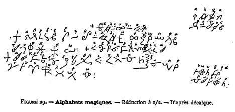
FIGURE XXIXEn réalité, aucun de ces alphabets n'a rien de commun avec les hiéroglyphes. Ce sont simplement deux alphabets cryptographiques, formés avec des lettres grecques plus ou moins défigurées, mais sans modification dans leur nombre ou leur valeur. Il existait un grand nombre d'alphabets analogues au moyen âge. On trouve notamment une page entière d'alphabets de ce genre dans le manuscrit 2419, folio 279. Le premier alphabet de ce folio ressemble beaucoup au premier du manuscrit de Saint-Marc, donné plus haut; le sixième du manuscrit 2419 ressemble aussi, quoique d'un peu plus loin, au second du manuscrit de Saint-Marc. Les alphabets du manuscrit 2419 semblent, d'après leur traduction superposée en lettres rouges presque effacées, répondre à l'alphabet latin de préférence à l'alphabet grec. C'étaient là en réalité des jeux d'esprit individuels, plutôt que des alphabets usuels. En tout cas, il m'a paru intéressant de reproduire les spécimens ci-dessus, surtout le premier, qui se retrouve à peu près pareil dans deux manuscrits dissemblables de composition et d'origine.
Figure 30. — Cette figure (manuscrit de Saint-Marc, fol. 102 verso) représente le Labyrinthe de Salomon, avec un commentaire en vers ; le tout d'une encre et d'une écriture plus modernes, probablement du XIVe siècle.
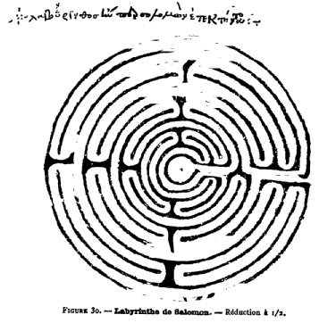
FIGURE XXXOn donnera ailleurs (Texte grec, I, xx) ce commentaire.14
Figure 31. — Cette figure (manuscrit de Saint-Marc, fol. 5) est un symbole
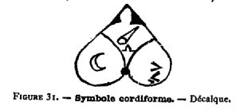
FIGURE XXXIcordiforme, avec les signes de l'or, de l'argent, et peut-être d'autres métaux (Le cercle droit d'en bas renferme dans le manuscrit quatre signes mal définis, dont un c, lequel a disparu dans la figure actuelle, par suite d'un accident de gravure.) ; il se trouve à côté de la première ligne de Stéphanus, écrit à l'encre rouge ; il est contemporain du texte. Il semble que ce soit là un symbole de l'art de fabriquer l'or et l'argent. On croit utile d'en rapprocher la figure suivante.15
Figures 32 et 33. — C'est un dessin mystique, formé par l'assemblage de divers signes destinés à représenter une opération chimique ; on dirait une
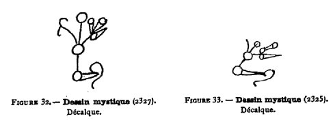
FIGURE XXXII et XXXIIIsorte d'équation chimique, analogue aux équations atomiques et renfermant comme les nôtres les symboles des corps intervenants. Elle se trouve au folio 47, verso, du manuscrit 2327, vers la fin de la troisième leçon de. Stéphanus, vis-à-vis des mots : outoV estin o ethsioV o parermoV o polucrwmoV
« C'est la pierre étésienne, le support polychrome (des teintures ?). »16
Puis vient tout un développement mystique sur la pierre philosophale. Le relieur du manuscrit, au XVIe siècle, a coupé une partie de la branche gauche du dessin. Mais il n'y avait là rien de particulier, comme le montre le manuscrit 2325 qui contient la même figure (fol. 46, verso). On a reproduit cette dernière à côté (fig. 33). Telles sont les figures fournies par le manuscrit de Saint-Marc et les dessins congénères de ces figures, reconnus dans les autres manuscrits.
Etudions maintenant les figures propres du manuscrit 2327, en commençant par les figures mystiques.
Figure 34. — Cette figure (manuscrit 2327, fol. 196) est celle du serpent Ouroboros (Origines de l'Alchimie, p. 59 et 256.), en tête d'un article reproduit dans le Texte grec (I, v). Il est formé de trois cercles concentriques, comme la figure supérieure de la Chrysopée de Cléopâtre ; mais de plus il a ici trois oreilles et quatre pattes. La tête, les oreilles et l'anneau extérieur sont peints en rouge vif (rrr); le blanc
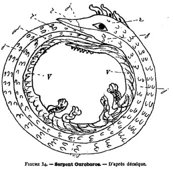
FIGURE XXXIVde l'oeil est blanc, la pupille noire ; le premier anneau est écailleux. Le second anneau (moyen) est écailleux et jaune (jjj). L'anneau intérieur est d'un vert continu (vv), ainsi que les pattes. Ces couleurs d'ailleurs ne répondent pas exactement à une description de Stéphanus (Lettre à Théodore), d'après laquelle l'origine de la queue est blanche comme du lait ; le ventre et le dos, couleur de safran, la tête noir verdâtre. Il devait y avoir bien des variantes. Au folio 279 du même manuscrit se trouve une seconde figure du serpent, avec un texte un peu différent : celui-ci n'a que deux anneaux ou cercles ; ses écailles sont mieux marquées.17
Figure 35. — Cette figure (manuscrit 2327, fol. 297 verso) représente le signe d'Hermès, assez informe; le folio a été remonté sur une bande blanche.18
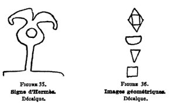
FIGURE XXXV et XXXVIFigure 36. — Cette figure renferme quatre images géométriques, destinées à commenter le texte du folio 106 recto (manuscrit 2327). Elles existent aussi au manuscrit 2325 (fol. III), au manuscrit 2275 (fol. 78 verso), etc.
Les figures qui suivent concernent des appareils nouveaux, dont il convient de comparer soigneusement les formes avec celles ;des figures correspondantes du manuscrit de Saint-Marc.
Figure 37. — Cette figure (manuscrit 2327, folio 81 verso) contient deux alambics et deux vases à digestion.19
- 1° A gauche, on voit l'alambic à trois pointes (tribicos), dont la forme générale (sauf le nombre de becs) s'est rapprochée de celle des alambics modernes en verre, usités au siècle dernier, et dont on fabrique encore aujourd'hui quelques échantillons. Le matras ou chaudière porte d'ailleurs la même inscription que la figure 15 (lwpaV qeiou aputou : matras contenant le soufre apyre) ; il est posé de même sur le feu (jwta). Le chapiteau est surmonté du mot calkion (vase de cuivre), et les trois tubulures sont figurées cylindriques : l'un des trois récipients a été coupé par le relieur.
- 2° A côté se trouve un alambic à un seul bec, posé sur un fourneau (kamhvion, sic) ; la forme générale en est la même. On doit le regarder comme équivalent à celui de la figure 16 ; à cela près que le tube de ce dernier (swlhn) est remplacé par un chapiteau (calkion). On donnera tout à l'heure une figure similaire (fig. 38), d'après le manuscrit 2327 (fol. 221); laquelle n'est pas identique à la précédente et se rapproche de celle de Saint-Marc, plutôt que de nos alambics actuels.Par contre, la forme de l'alambic est devenue à peu près identique à celle de nos vieux instruments (en verre), dans la figure, unique d'ailleurs et mal faite, du manuscrit 2252, copié au XVIIe siècle. Dans ce manuscrit, au-dessous des trois cercles concentriques et au début des Mémoires authentiques (gnhsia upounhmata) de Zosime, on aperçoit un alambic (bukoV uelinoV), sur un foyer (kaustra), et un récipient condensateur à col étroit, lopaV h aggoV stenostomon (sic). On voit qu'il y a de légères variantes dans les inscriptions.
- 3° A gauche et en bas, dans la figure 37 du manuscrit 2327, se trouve un appareil à digestion ou à cuisson, formé d'une fiole sur un bain de sable, chauffé par un fourneau (pur). La fiole est désignée par un mot coupé en deux par le relieur, et terminé par les syllabes thsiV, tel que opthsiV (cuisson). L'inscription qui désigne le fourneau est également coupée en deux ; mais on lit sur les trois lignes superposées les syllabes finales lai - aion - minion. Il est facile de reconnaître ici l'inscription de la figure 22 : (pa) lai (sti) aion (ka) minion. Il paraît donc que c'est là l'équivalent du bain de cendres, destiné à chauffer la palette ou khrotakiV. Mais la palette est tombée en désuétude et les opérations effectuées à l'origine avec son concours ont été simplifiées dans le cours des temps, et réduites à de simples digestions ; celles-ci sont opérées également sur un bain de sable ou de cendres. La matière même, au lieu d'être placée sur une palette métallique, est déposée soit sur une pièce-plate (fig. 38) ou conique (fig. 37), au-dessous du bouchon, soit même au fond de la fiole. Dans ces conditions, l'emploi de la palette constituait une complication inutile.
- 4° C'est ce que confirment le dessin et l'inscription placés à droite de la figure 37. Nous avons ici une fiole, le mot jualh [sic] ayant passé du sens ancien coupe au sens moderne fiole. Cette fiole est surmontée d'un bouchon ou tête, assez compliqué, au-dessous duquel il semble qu'il reste quelque indice de la kérotakis, sous l'apparence d'une pièce conique peu distincte. Le tout est enfermé dans une enceinte, formée d'un cylindre inférieur, posé sur le fourneau, kamhnion (sic), et d'une coupe hémisphérique renversée, qui constitue le haut du cylindre.Il serait difficile de reconnaître à première vue que cet appareil a remplacé celui de la figure 25, ou plutôt ceux des figures 20 et 21 ; Car la kérotakis a disparu. Mais la filiation des appareils résulte des inscriptions qui les accompagnent. En effet, on lit au-dessus du dessin (4°) de la figure 37, les mots : karkinoeideV keitai de o logoV emuprosqen ; c'est-à-dire la même inscription que sur la figure 25. Ce serait donc là encore un appareil à digestion et distillation rétrograde, dans lequel les produits sublimés retombent sur la matière inférieure qui les a fournis : ainsi qu'il arriverait dans un appareil disposé pour blanchir le cuivre par la sublimation réitérée du mercure ou de l'arsenic (p. 145). Ajoutons qu'on lit au-dessous de l'ensemble de ces appareils les formules mystiques des opérations qui s'y accomplissaient :
« en haut les choses célestes, en bas les terrestres ; par le mâle et la femelle l'oeuvre est accomplie » 20
(manuscrit 2327, fol. Si verso) : anw ta ourania, katw ta epighia, di arenoV kai qeleoV plhroumenon to ergon.
Figure 38. — Cette figure (manuscrit 2327, fol. 221 verso) reproduit le dessin de la figure 37, sauf variantes.
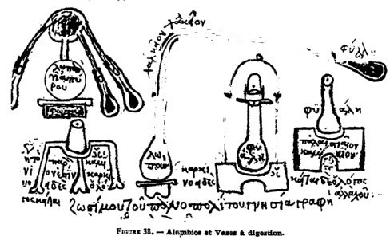
FIGURE XXXVIII- 1° Le dessin à gauche et en haut (tribicos) est à peu près le même.
- 2° Le dessin de l'alambic à un seul bec offre une variante, qui le rapproche de la figure 16. Cette forme existe aussi, grossièrement dessinée, dans le manuscrit 2275 (fol. 57 verso).
- 3° Le dessin de la fiole à digestion, reporté ici tout-à-fait à gauche, est à peu près le même que dans la figure 37.
- 4° Mais le dessin voisin est un peu différent. Le bouchon de la fiole offre des traits dissemblables, et peut-être un dernier reste de lame horizontale, répondant à la kérotakîs. Il porte d'ailleurs la même inscription, caractéristique d'un appareil à opération rétrograde, que la figure 37 ; sauf la substitution du mot allacou (ailleurs) au mot emprosqen.
- 5° A gauche, en bas, un vase à digestion (aludel mal fait ?) sur un grand trépied, avec l'inscription : hgoun to paron kaminion estin karkinoeideV o logoV kaitai :« Le présent fourneau est rétrograde ; la description est ici. » (V.p. 134.)
Figure 39. — Cette figure (manuscrit 2327, fol. 289 verso), répétée deux fois, est un alambic à tubulure unique.
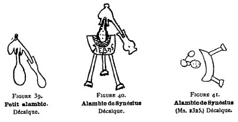
FIGURE XXXIX - XL - XLIFigure 40. — Cette figure (manuscrit 2327, fol. 33 verso), fait partie de l'ouvrage de Synésius et répond exactement au texte de l'auteur : c'est l'une des plus intéressantes, en raison de la date de cet ouvrage (IVe siècle). Elle représente un alambic, sur une marmite servant de bain-marié (lebhV), portée elle-même sur un trépied. Elle rappelle tout à fait la disposition de nos appareils modernes. A côté se trouvent les mots caractéristiques : sunarmozetai tw botariw ualinon organon ecwn mastarion.
« On ajuste au matras inférieur (botarion) un instrument de verre, en forme de mamelle (mastarion). »
Cet instrument est muni d'une gorge, ou rainure circulaire, destinée à récolter les liquides condensés dans le chapiteau et à les conduire dans la tubulure qui aboutit au récipient. C'est un appareil qui est encore en usage aujourd'hui. Le sens jusqu'ici obscur des mots botarion et mastarion se trouve précisé par ce texte et cette figure. La figure manque d'ailleurs dans le manuscrit de Saint-Marc, quoique le texte soit le même; mais elle existe dans le manuscrit 2325 (XIIIe siècle). Le manuscrit 2275 la reproduit (fol. 16).
Figure 41. — Elle reproduit le dessin fort élémentaire du même alambic, d'après le manuscrit 2325. Tout ceci est fort important pour l'histoire de la distillation. A l'origine, on distilla le mercure, en le condensant simplement dansun chapite au posé sur un pot (Dioscoride, Pline). Ce n'est que plus tard que l'on adapta une gorge à la partie inférieure, pour empêcher les liquides condensés de retomber dans le pot ; puis cette gorge fut pourvue d'une tubulure, destinée à conduire au dehors le liquide condensé. On voit par le texte et par la figure conforme de Synésius que ces progrès étaient réalisés dès la fin du IVe siècle de notre ère. Rappelons que Synésius, dans une lettre à Hypatie21, publiée parmi ses œuvres connues, a décrit aussi l'aréomètre, œuvre d'une science déjà avancée.
Figure 42. — Cette figure (manuscrit 2327, fol. 112 verso), répétée deux fois, est une simple fiole.
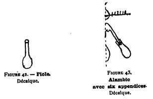
FIGURE XLII - XLIIIFigure 43. —Cette figure (manuscrit 2327, fol. 184 verso), malheureusement coupée par le relieur, se trouve vers la fin du poème de Théophraste. On y discerne un alambic, mais avec un appendice supérieur, fort singulier dont la position rappelle la khrotakiV. Il est muni de six lignes verticales, répondant au texte suivant : jerontaV taV eV zwnaV wV tigma (sic) jagai
« Portant six ceintures (enveloppes) pour absorber la matière fondue.»
Les figures du manuscrit 2325 sont très intéressantes parce qu'elles répondent à une époque intermédiaire (XIIIe siècle) entre celui de Saint-Marc et le n° 2327 de Paris. Elles sont en général conformes à celles du manuscrit de Saint-Marc, bien que le manuscrit 2325 n'en dérive certainement pas directement, comme Je le montrerai. Il résulte de cette double circonstance que la date des dessins du 2325 est antérieure à la copie actuelle du manuscrit de Saint-Marc, et même à la date de ses prototypes immédiats ; cepen-dant ils doivent dériver tous les deux de quelque source commune et plus ancienne. Quant au détail, le nombre, la forme et la dimension des parties des appareils sont;assez différents, pour quelques-uns du moins. Le manuscrit 2325 contient en plus l'alambic de Synésius, figure 41, et le dessin (fig. 33) mystique de la 3e leçon de Stéphanus. Par contre, les appareils à digestion y sont moins multipliés. Nous avons donné les figures essentielles de ce manuscrit, telles que : la figure 41 (fol. 23 verso) représentant l'alambic de Synésius, avec la chaudière (lebhV), et le feu (pur). La figure 17 (tribicos), est analogue à celle du manuscrit de Saint-Marc (fig. 15). Toutefois les dimensions relatives du matras à soufre (lwpaV qeiou apurou), du tube vertical, du condensateur supérieur et des ballons qui recueillent le produit distillé sont différentes ; le dessin de l'un de ces ballons a même disparu. — En outre, le mot pur (feu) a remplacé kaustra (foyer). La figure du tribicos, de même que toutes celles du manuscrit 2325, est beaucoup plus grossière que celles du manuscrit de Saint-Marc. A côté se trouve également, très grossièrement dessiné, l'appareil distillatoire à large tube de cuivre (calkion), de la figure 16; mais J'ai jugé inutile de reproduire ce dessin du manuscrit 2325. Au-dessous du tribicos, on voit la figure 23 donnée plus haut : c'est celle d'un appareil à kérotakis, analogue à celui de la figure 22. Mais le fourneau (palaistiaion kaminion) est plus petit et les condensateurs supérieurs (jialh), sur l'extérieur, sont plus gros. Les ponctuations, indicatrices- de trous sur le bain-marie, couvrent un espace bien moindre. Le mot de kérotakis n'y figure pas. Enfin, au-dessous du swlhn et du calkion, on voit un autre appareil à
kérotakis, reproduisant le karkinoV de la figure 25, avec des variantes trop légères pour que j'aie cru utile de le donner. On remarquera que les figures sont moins nombreuses dans le manuscrit 2325 que dans le manuscrit de Saint-Marc ; elles sont d'ailleurs concentrées en tête du mémoire de Zosime, dans le manuscrit 2325 aussi bien que dans le manuscrit 2327. Ce mode de distribution est évidemment plus moderne que celui du manuscrit de Saint-Marc.Figures des manuscrits de Leide.
L'histoire des appareils alchimiques tire une nouvelle lumière de l'examen des manuscrits alchimiques grecs de Leide. L'un d'eux (Codex Vossîanus, in-4°, n° 47), fort mal écrit d'ailleurs, reproduit presque toutes les figures du manuscrit de Saint-Marc, entre autres : Nos trois planches I, II, III (fig. 3, 4, 5), sauf quelques inversions; La Chrysopée de Cléopâtre de la figure 11 (fol. 49 verso) ; La double figure 14 et 14 bis du dibicos (fol. 50 verso) ; La figure 15 du tribîcos (fol. 51 verso) ; La figure 16 de l'appareil distillatoire (fol. 51 verso); La figure 18 de la chaudière distillatoire (fol. 58 recto); Les deux appareils cylindriques de nos figures 20 et 21 (fol. 53 verso); Les kérotakis de nos figures 22 et 24 (fol. 52 verso); La palette de la figure 24 bis (fol. 53 recto) ; La figure 25 du vase à kérotakis, portant à côté le mot karkinoeideV (fol. 55 verso); Les récipients de la figure 26 (fol. 55 verso); Le vase à kérotakis cylindrique de la figure 27 (fol. 55 verso) ; La figure 31 corditorme (fol. 51 recto); La formule magique de l'Écrevisse (fig. 28), avec son explication (fol. 70 recto), fidèlement copiée. II est clair qu'il s'agit dans tout ceci d'une simple copie, directe ou indirecte, des figures du manuscrit de Saint-Marc.
L'autre manuscrit de Leide est noté XXIII. Ru. 6 (ayant appartenu à Ruhnkenius) ; il a été écrit au XVIIe siècle et est fort analogue par sa table, laquelle forme une grande partie de son contenu, à notre manuscrit 2327. Il en reproduit textuellement tout le tableau des signes, c'est-à-dire les cinq pages qui forment nos figures 6 à 10, planches IV à VIII. Aux folios 21 et 22, il renferme diverses figures pareilles, avec des variantes dans les inscriptions et dans les dessins, dont quelques-unes fort importantes. Je vais les signaler : Folio 21 : alambic de Synésius, conforme à la figure 40 ci-dessus ; mais il porte quatre mots, au lieu du seul mot lebhV inscrit au manuscrit 2327, mot qui se retrouve d'ailleurs aussi sur la marmite, dans le manuscrit Ru. On y lit en outre : lwpaV sur le matras, jialh sur le chapiteau, doceion sur le récipient. Au-dessous on voit 5 dessins intéressants, savoir, de gauche à droite :
- 1° Un alambic à une pointe, correspondant à celui des figures 13 et 37. Il porte les mots kaminion sur le fourneau, lwpaV sur le matras. La forme du chapiteau indique très nettement que c'est une fiole renversée, dont le col entoure celui du matras, les lignes des deux cols n'étant pas confondues. — Cette différence ne m'a pas paru assez grande pour exiger la reproduction du dessin.
- 2° Un alambic, sans chapiteau, mais à large tube, répondant à celui des figures 16 et 38. On y lit les mots kaminion sur le fourneau, jialh sur le matras, calkeion (sic) sur le gros tube; le récipient n'a pas de nom. Ces mots ne coïncident pas exactement avec ceux des figures 16 et 38; ce qui montre que le manuscrit Ru. n'a pas été copié directement sur les nôtres.
- 3° Au-dessous de ce dessin, un matras à digestion (jialh), sur un bain de sable, chauffé surun fourneau (palaistiaion kaminion), avec l'indication opthsiV, comme dans la figure 37.
- 4° Une fiole à digestion, récouverte d'une sorte de cloche, reproduisant à peu près identiquement la fiole de la figure 38, avec les mêmes appendices à la partie supérieure ; appendices dérivés, comme je l'ai établi, de la kérotakîs (fig. 22 et 25). La seule inscription qui existe dans ce dessin est placée sur le fourneau : kaminion palaistiaion. Ces mots confirment l'opinion qu'il s'agit d'une transformation de l'appareil des figures 22 à 25.
- 5° Enfin, à la droite on voit le petit trépied de la Chrysopée de Cléopâtre (fig. 11). Au-dessous sont les mots en bolbitoiV (dans le fumier). Ces mots sont caractéristiques. En effet, ils montrent qu'il s'agit d'un appareil destiné à être maintenu en digestion à une douce chaleur, au milieu du fumier en fermentation. Cet appareil est posé sur un trépied et paraît identique à celui qui est dessiné à gauche, au-dessous du tribicos, dans la figure 38.En somme, ces cinq dessins sont les mêmes que ceux des figures 37 et 38; ils répondent à ceux des figures 12 et 13, lesquels sont eux-mêmes des dérivés faciles à reconnaître des dessins de la figure 11 (Chrysopée de Cléopâtre). Toute la filiation des figures apparaît ainsi, de plus en plus clairement, grâce au détail des dessins et des inscriptions. L'étude des dessins de la feuille 22 du manuscrit XXIII Ru. 6 de Leide permet de pousser plus loin et d'établir d'une façon directe la relation entre les appareils des alchimistes grecs et ceux des Arabes, tels qu'ils figurent dans les ouvrages de Geber. Ces dessins sont une sorte de doublets de ceux de la feuille 21 ; précisément comme dans le manuscrit 2327, les dessins de la figure 38 (fol. 221 verso) sont les doublets de ceux de la figure 37 (fol. 81 verso). Cette répétition du même système d'appareils, qui semblerait à première vue due à une inadvertance du copiste spécial du manuscrit 2327, doit en réalité résulter d'une répétition plus ancienne, puisqu'elle se retrouve dans un manuscrit en somme assez diflérent, quoique de même famille. Décrivons ces dessins du manuscrit Ru. de Leide. On y voit:
- 1° Un tribicos, avec son matras (lwpaV qeiou apurou), son chapiteau (calkeion), ses trois tubulures et récipients, et son fourneau (kaminion). La jonction du chapiteau au matras indique très clairement, comme plus haut, l'emboîtement de deux vases tout à fait distincts.
- 2° A droite, le dessin d'un alambic à une seule tubulure, reproduction du numéro 1° de la série précédente, c'est-à-dire des figures 13, 37, 38, portant notamment les trois inscriptions du dessin central de la figure 37.
- 3° Au-dessous, à gauche, le matras (lwpaV) à digestion (opthsiV), posé sur le palaistiaion kaminion.
- 4° Les deux dernières figures sont si caractéristiques, que je vais les reproduire.Figure. 44. — Vase à digestion.
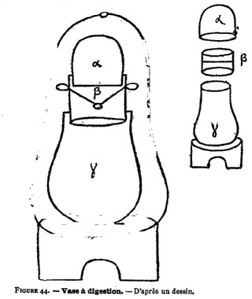
FIGURE XLIVLa figure de droite reproduit l'appareil à digestion des figures 37 et 38, placé de même sous une enveloppe générale en forme de cloche. Pour plus de précision, je remarquerai que mon dessinateur a raccourci les petites oreilles, situées à droite et à gauche de la lettre b. Dans le manuscrit, ces oreilles s'étendent jusqu'à l'enveloppe et la touchent, de façon à marquer la division de cette enveloppe en deux portions superposées, telles qu'elles sont dessinées en effet dans les figures 37 et 38. Cette enveloppe générale semble avoir été symbolisée par la dénomination de l'œuf philosophique. D'autre part, les trois portions intérieures de cet appareil à digestion sont dessinées à côté, séparées et superposées, de façon à en montrer nettement tout l'ajustement. Avant d'en discuter la signification, donnons les inscriptions correspondantes. Elles sont d'une grécité de très basse époque. Sur le dessin de droite, la panse du matras y porte les mots : omuoion ene touto meta tria komatia (sic), c'est-à-dire :
« ceci reproduit les trois segments séparés du dessin qui est à côté. »
Sur le fourneau, on lit : en bolbitoiV kaminion, c'est-à-dire:
« fourneau entouré de fumier. »
Au-dessous de l'ensemble de ce dessin : karkinoeideV keitai de o logoV emprosqen :
« appareil rétrograde; la description est au-dessus. »
—Rappelons que ces mots caractéristiques se trouvent à côté du matras analogue des figures 37 et 38 et de l'appareil à kérotakis de la figure 25. Sur le côté, on lit, inscrits verticalement, les mots : enatalwnasi. jiliazh; kata ta tria komatia, c'est-à-dire :
« dans les trois segments, on ramollit et on combine (les matières) ».
Venons au dessin de gauche, qui représente les trois segments séparés, avec lettres correspondantes. On lit à côté, inscrits verticalement, les mots : tout empnehV to alon kai to alon enatalw h prwtoV, deuteroV, triton (sic) ; c'est-à-dire :
« voici l'un des vases où l'on évapore, et l'autre où l'on ramollit; c'est-à-dire le 1er, le 2e, le 3e (segment), »
Ces inscriptions confirment exactement les opinions émises plus haut, relativement à l'usage de cet appareil. D'après les dites inscriptions en effet il répond aux figures 22, 24, 25, c'est-à-dire aux appareils à kérotakis. Il suffit d'imaginer que les appareils placés au sommet des figures 22 et 25 ont été enveloppés par la sphère de la partie inférieure, pour comprendre les figures 38 et 37 : c'est toujours là l'appareil rétrograde, destiné au blanchiment du cuivre par le mercure ou par l'arsenic sublimé. Ajoutons que, les trois segments intérieurs ne sont autre chose que les trois parties des figures 20 et 21 du manuscrit de Venise, représentant des vases à digestion cylindriques. — De même la figure 27, qui en exprime une forme un peu différente, donnant en quelque sorte la transition entre la figure 20 et les figures 22, 24 et 25. Mais la figure 44 nous permet d'aller plus loin et d'établir que ces appareils correspondent à l'aludel de Geber et des alchimistes arabes. Il suffit, pour s'en assurer, de jeter un coup d'œil sur les dessins des aludels, figure 45. Nous avons ici les trois segments à digestion des alchimistes grecs; avec cette différence pourtant que les deux segments inférieurs sont réunis en un seul morceau dans les dessins des aludels. Le couvercle s'ajustait à frottement doux sur la paroi de la région moyenne : et cela dans une portion considérable de sa hauteur. Les deux morceaux extrêmes sont terminés
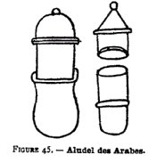
FIGURE XLVchacun par une couronne ou bague extérieure, l'une se superposant à l'autre, de façon à compléter la jonction. Tout ceci est décrit en détail dans l'ouvrage de Geber. Le couvercle offre deux formes différentes: l'une hémisphérique, l'autre conique. Ces aludels étaient en verre. Cette figure est tirée de la Bibliotheca Chemica de Manget (t. I, p. 540, fig. 2 — Genève, 1702). Dans la même planche de l'ouvrage précédent, sont représentés (fig.1) le fourneau, au centre duquel l'on plaçait l'aludel (fig. 3), ainsi qu'un autre type d'aludel, changé en alambic par l'adaptation d'un tube à son chapiteau, le tout chauffé à la partie inférieure à l'aide d'un fourneau, etc. La description de ces appareils existe, en traduction latine, dans le second livre de l'ouvrage de Geber, intitulé : De principiis magisterii et perfectione. Ce livre peut servir sur quelques points de commentaire aux traités de Zosime sur les fourneaux et instruments ; il continue et développe la tradition des alchimistes grecs; non sans y ajouter d'ailleurs bien des choses nouvelles. Mais cette comparaison nous mènerait trop loin. Quoi qu'il en soit, on voit que ces diverses figures jettent un grand jour sur les pratiques et appareils des anciens alchimistes, sur les changements que ces appareils ont éprouvé dans le cours des temps, ainsi que sur la filiation des manuscrits.
Notes [nous ne donnons plus que les cinq premières occurrences les plus importantes des sections du site, pour éviter d'inutiles redites -]1. Ces symboles sont rien moins que les arcanes de l'Art sacré, cf. symbolisme, etc.
2. Sur la Chrysopée de Cléopâtre, cf. 1, 2, 3, 4, 5.
3. C'est-à-dire le Mercure, accompagné du Soufre rouge [Corps ou Âme] et du Soufre blanc [Corps, Sel]
4. C'est l'une des sentances les plus importantes de l'Art. Elle a été reprise par les alchimistes modernes comme Fulcanelli et E. Canseliet. Cf. 1, 2, 3, 4, 5.
5. Sur l'eau de soufre ou eau divine, cf. réincrudation.
6. Il s'agit de la Summa Perfectionis Magisterii in suâ naturâ p. 519.
7. Ce mot hqmoV et cette abréviation iqm font penser au terme ithmid, nom arabe de l'antimoine, phonétiquement proche de itmat, mss de Zosime, cf. Mercure. Ce qui est remarquable est le fait que eqmoV représente un condensateur servant à recueillir des substances sublimées.
8. Ce second signe s'apparente à un tau [croix ansée] surmonté du symbole solaire. Ce tau s'apparente au symbole du cuivre, selon Fulcanelli [Mystère, p. 61].
9. L'association du cuivre et du plomb évoque à l'hermétiste celle de l'Airain et du Plomb des Sages, c'est-à-dire du Compost. C'est la raison essentielle de l'association fréquente dans les textes entre Vénus et Saturne.
10. De la même façon, on peut réinterpréter ce signe de l'Ecrevisse ou du Scorpion en lui donnant le sens de blanchiment du Laiton, comme nous avons été amenés à l'observer dans le commentaire de l'Atalanta fugiens.
11. Les signes 10 à 13 montrent des symboles cruciformes où se distinguent avant tout des chaux métalliques ; cela constitue sans doute l'un des exemples les plus anciens de la représentation des oxydes métalliques. Il est assez remarquable d'observer la progression de l'oeuvre, de la gauche vers la droite, dans les 13 symboles que compte la figure XXVIII.
12. Les remarques de Berthelot confirment le sens alchimique développé dans la figure XXVIII. Dès lors, on peut tenter l'interprétation suivante : les hiéroglyphes de cette figure donneraient à voir des formules uniquement lisibles pour l'Initié (signe 1). Le signe 2 serait du même type que la formule an to pan [Un Le Tout] résumant la Table d'Emeraude. Notez que la croix ansée [le tau] est assimilable au Laiton hermétique : c'est un signe exprimant la conciliation des contraires, c'est-à-dire du Soufre ou du Mercure, ou si l'on préfère, des deux extrémités du vaisseau de nature. Le signe 3 représenterait le symbole de l'Airain [le cuivre chez les Anciens possède aussi le sens d'airain ou de laiton, voire de bronze] ; le signe 4, l'opération de la dissolution, etc.
13. Il est effectivement remarquable de trouver dans la figure XI comme l'expression de certains des signes de la figure XXVIII ; ainsi, le cercle avec les trois symboles est-il assimilable au signe 2 [croix ansée] ; le signe 4 à celui dont parle Berthelot. On pourrait voir dans les trois étoiles de la figure XI les signes 6, 7 et 8 de la figure XXVIII mais ce n'est qu'une hypothèse.
14. Cette figure est célèbre et a été reproduite ailleurs dans ce site, cf. Gardes du Corps. Cf. aussi Atalanta, XVII et XLI.
15. Cette figure est intéressante en ce qu'ele permet de rapporter les symboles des métaux à ceux de la Chrysopée, à la figure XI. Notamment, les signes situés à droite pourraient représenter le Rebis ou amalgame philosophique. L'attention est attirée par cet objet trifolié où l'on devines les trois principes de l'oeuvre.
16. Le dessin de gauche semble montrer le symbole du Bélier, puis celui de Vénus et enfin le signe des limailles d'or et d'argent.
17. Il s'agit du serpent Ouroboros de la grande tradition hermétique ; les trois anneaux décrivent les principales étapes de la Grande Coction ; la couleur verte pour le Lion Vert ; la couleur jaune pour la transition du régime de Vénus. La couleur rouge, pour la rubification. Notez que l'aspect écailleux de l'anneau extérieur semble se rapporter à un épisode où les alchimistes parlent de leur terre feuillée, en un moment où Basile Valentin exhorte l'Artiste à « faire blanchir le laiton et à brûler les livres », traduction inexacte d'ailleurs de la formule : « dealbate latonam et rumpire libros ».
18. le dessin de droite présente les quatre éléments organisés selon les stades de l'oeuvre [carré, triangle, demi-cercle, losange et carré circonscrit, ce dernier représentant la Pierre].
19. Cette figure est reproduite dans plusieurs livres traitant d'alchimie.
20. A rapprocher de la Table d'Emeraude.
21. sur Synesius, cf. le Vrai Livre du docte Abbé Synesius.